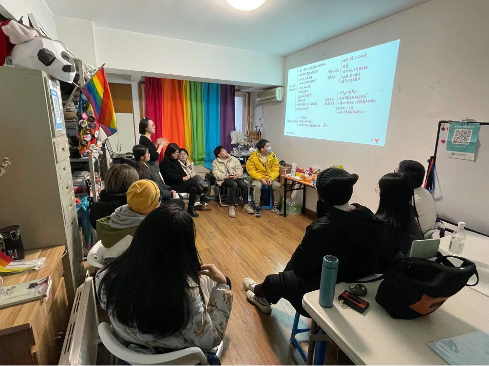
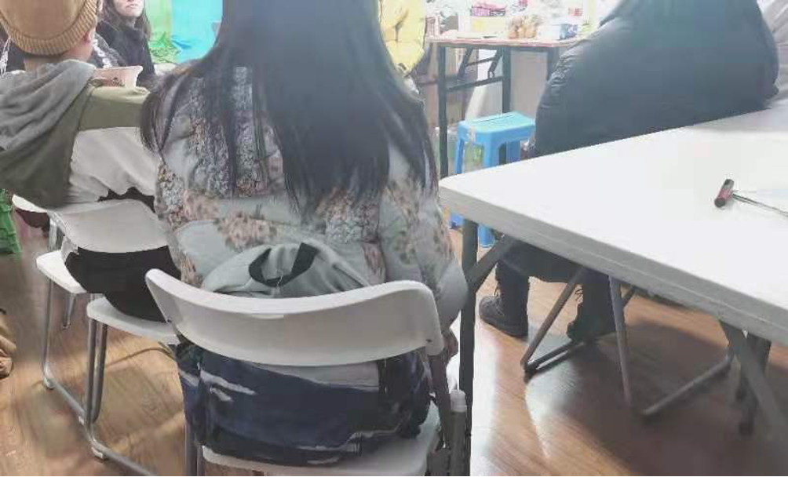
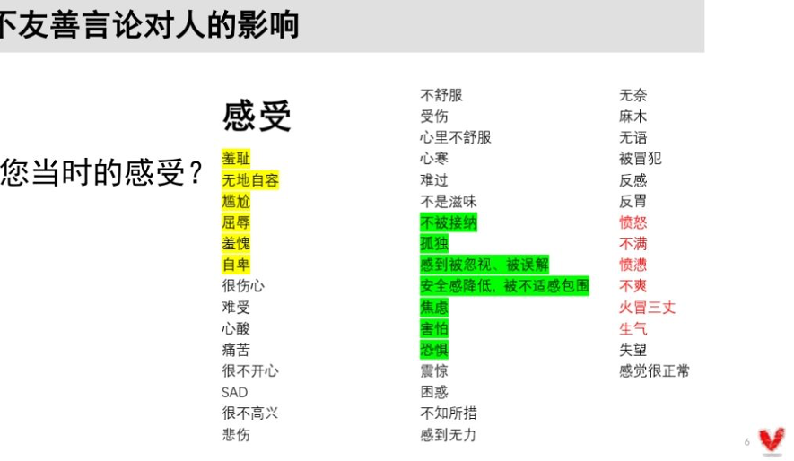
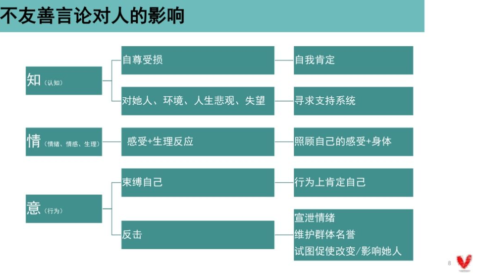
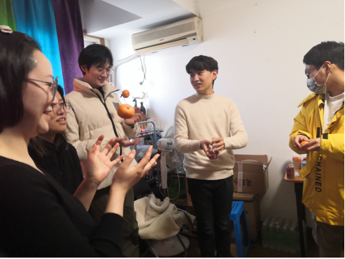
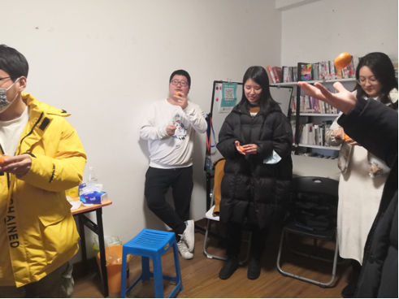
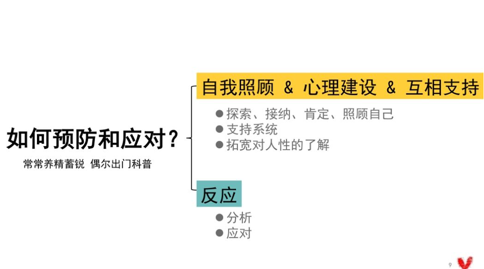
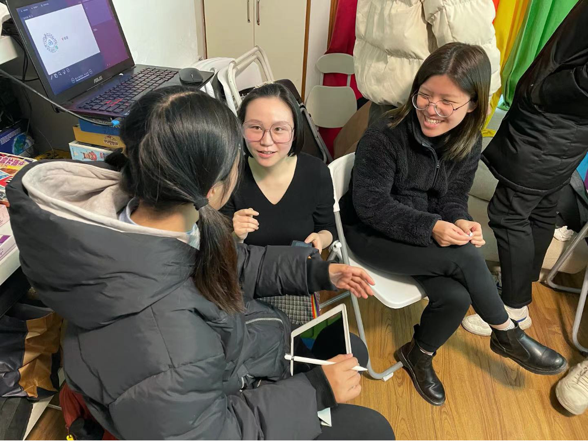

活动总结｜性少数群体应对不友善言论工作坊
原创
多元×健康×平等=
酷儿论坛
酷儿论坛
微信号
motss2002
功能介绍
杭州酷儿论坛（motss.info）致力于为杭州及周边地区学生性少数人群提供一个多元、健康、平等的环境，促进自我认同和社会认可。
2021-01-15
收录于话题
1月9日，我们在杭州同志中心举办了一次关于性少数群体应对不友善言论的工作坊。
此次活动由酷儿论坛组织进行，并同时邀请到了国家三级咨询师佑佑带领大家进行讨论。

根据酷儿论坛2020年于浙江大学进行的紫色校园日活动反馈，性少数群体面临的
霸凌、冒犯和不友善行为、言论
构成了基于性/别的校园欺凌议题的一个
灰色地带
，学生普遍反映这种轻度（但普遍）的不友善行为反而更棘手。
我们在前期问卷调查的基础上，了解了大家所普遍面对的不友善言论困境，
超六成受访者
曾遭受到基于性/别的不友善言论攻击，且对于如何应对
非常迷茫
。
所以，一次对于性少数群体所遭遇的不友善言论这一灰色地带的讨论变得更加有必要。

活动伊始，根据自己的经历和认识，结合此前问卷调查的结果，大家讨论了不友善言论对人的影响。在这一环节，大家提到了许多不友善言论被发出时的
心情关键词。
对自己的影响
对不友善言论发表者的影响
被点燃
错误的投射，误解的加深
脱敏
群体的分割，强化对自己的认同
变强大
下意识维护自己
...
...

而在问卷调查中，这些心情关键词变得更加丰富，具象，精细。

在大家进行分享之后，佑佑也从“知、情、意”三个维度归纳了不友善言论对人的影响。
之后，大家对“如何预防和应对不友善言论”这一话题进行了讨论和思考。
大家一致认为
应对和预防是一体的
，很多情况下，我们是在不友善言论发生时，在应对的过程中实现了对今后可能发生的不友善言论的预防。
大家分享了很多自己的应对方式，例如通过肢体动作等暗示表达自己的介意和厌恶；把不友善的人当成“小孩子”，从而能够更耐心的接纳对方的“不理解”、“不了解”；对身边的人进行分类，按照不同的人群采取不同应对措施；以及做好心理准备与预判，对可能发生的情况（比如过年时亲戚们的询问）进行充分的预演。


佑佑和大家分享了一句话：
“常常养精蓄锐，偶尔出门科普”
。花时间在自我认识、肯定与支持上，将会使我们更有底气去面对每一场风浪，并选择自己的态度。
从
“自我照顾&心理建设&互相支持”
和
“反应”
这两个方面进行归纳，可以得到许多对我们更有益的预防应对方式。

在工作坊的末尾，佑佑强调了在两种重要的不友善言论应对方式。
第一种情况是，
伤害别人的人会因为“你被伤害”而感到雀跃，不友善言论的接收者表现得越是抵触、委屈，在有些情况下，恰恰就越能迎合不友善者的期待。
在这种情况下，去暗示对方“这些言论不会让我受伤”，勇敢的展现自己的强大，会是一个更容易让对方沮丧/收敛的解决方案。
第二种情况是，
被伤害者常常在回顾被伤害的经历时，发现记忆以碎片化的形式被存储，觉得自己的经历“说不清楚”。
不过，请不必担心自己会“说不清楚”。当你对创伤进行“心智化”，并最终能够成功地、清楚地叙述出整个事件时，疗愈的过程也就此完成。

不友善的言论，常常比想象中残酷。愿本次工作坊的实践与模拟，能让我们以更坚韧的姿态，度过温暖的一生。